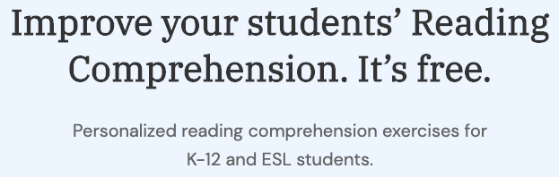
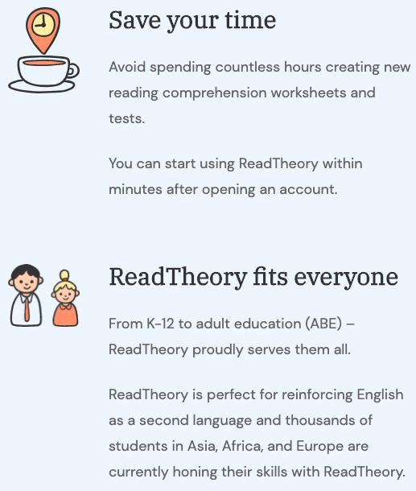

Video Streaming - 8-9pm, Monday - Friday.

CLASS CODE: FEKETN7S

MEETING NUMBER: 577 207 147
If YOU DON'T KNOW YOUR LEXILE ...
... you can visit www.readtheory.org and complete 15-20minutes of comprehensions every day to find and track your progress.
Watch the video below for insutrctions on how to find your 'Lexile' using Read Theory.
Read Theory Sign Up and User Instructions.
Press play...
HELP!
Do remember to type in your REAL NAME and our class code F E K E T N 7 S so I can track your progress over time!
请记住输入您的真实姓名和我们的班级代码F E K E T N 7 S，以便我跟踪您的进度！
www.readtheory.org
Over 14,000,000 Teachers and Students Enjoy Reat Theory
Teachers from all around the world are using ReadTheory to help their students improve their reading comprehension skills in a fun way that keeps them attentive and motivated.
Why Teachers Love Read Theory
1000s of exercises & worksheets
Our ever-growing database of ever-green passages fits every level of reading and guarantees your students will never get bored. ReadTheory has enough texts for year-round reading comprehension practice, including home practice.
Tracking & analysis
Track your students’ progress throughout the year with easy-to-understand reports. Easily identify struggling students and high-performers. Quickly analyze performance on the individual level and class level.
Trustworthy
All of our texts are accurately aligned to grade-level standards and a Lexile measure is provided for each, so you can trust your students’ performance metrics and reading level.
Captivating content
Our content fits every culture and every country and is one of the main reasons why students around the world love using ReadTheory.
Simple to use
Creating an account and adding students is easy as 1-2-3 (or A-B-C?).
Adaptive
ReadTheory’s reading comprehension practice is adaptive and caters to the individual’s needs. Our solution automatically recognizes the student’s reading level and matches them with the appropriate text and questions.
Our Schedule (lexile range)
Monday - Level 1 - BR70-10L
Tuesday - Level 2 - BR40-160L
Wednesday - Level 3 - 160L-450L
Thursday - Level 4 - 300L-530L
Friday - Level 5 - 430L-620L
Friday - Level 6 - 530L-850L